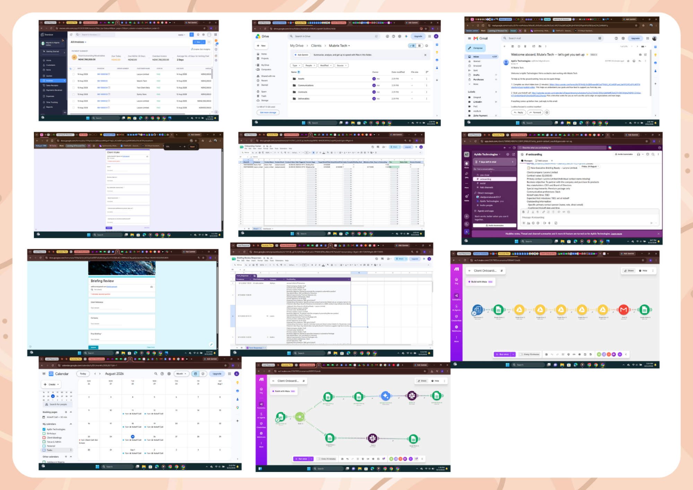

Client Onboarding & Data Routing Ecosystem
The Business Problem
Manual client onboarding caused communication bottlenecks, data fragmentation across disjointed tools, and a lack of real-time visibility into onboarding pipelines.
Solution (Action Taken)
Engineered a multi-stage automated onboarding pipeline using Make.com to orchestrate workflows across Zoho Invoice, Google Workspace (Drive, Forms, Sheets, Gmail), Gemini AI, and Slack. Designed a human-in-the-loop QA checkpoint in Slack for internal verification before triggering AI-generated briefs and automated client folders.
System snapshots
